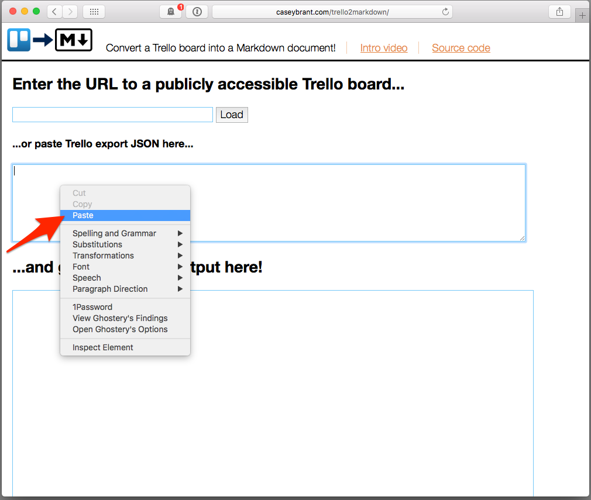
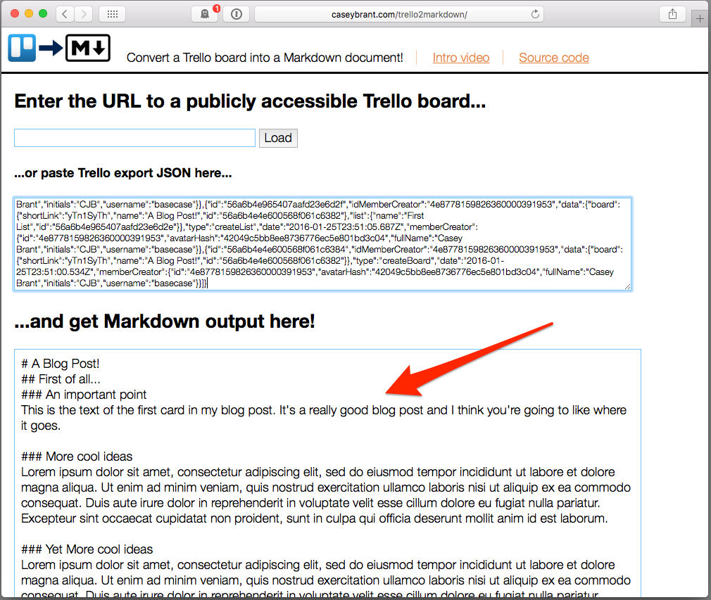

(< go back to Trello2Markdown)
How to export data from a Trello board
Step 1. Open your board's menu by clicking "Show Menu".
Step 2. Click on "More".
Step 3. Expand "Print and Export".
Step 4. Choose "Export JSON".
Step 5. You'll get this big ol' mess..
Step 6. Select all on this page and copy to your clipboard.
Step 7. Back over at Trello2Markdown, paste what you copied into the box here.

Step 8. And there's your Markdown!

(< go back to Trello2Markdown)
 Convert a Trello board into a Markdown document!
Intro video
Source code
Convert a Trello board into a Markdown document!
Intro video
Source code